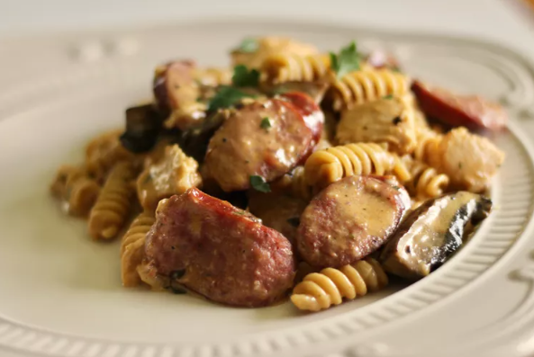

Home
One-Pot Cajun Chicken and Sausage Alfredo Pasta

Description
This one-pot Cajun chicken and sausage Alfredo pasta is so simple to make and absolutely packed with flavor.
Ingredients
1 pound Chicken (cut into bite-sized pieces)
½ teaspoon Kosher Salt
add Black Pepper (freshly ground)
4 tablespoons Extra-Virgin Olive Oil
14 ounces Smoked Sausage (sliced on the diagonal)
4 cloves Garlic (minced)
2 cups Low-Sodium Chicken Broth
1 ¼ cups Heavy Cream
2 cups Dried Penne Pasta
1 ½ tablespoons Cajun Seasoning (plus more to taste)
½ cup Parmesan Cheese (freshly shredded)
1 tablespoon Italian Flat-Leaf Parsley (minced)